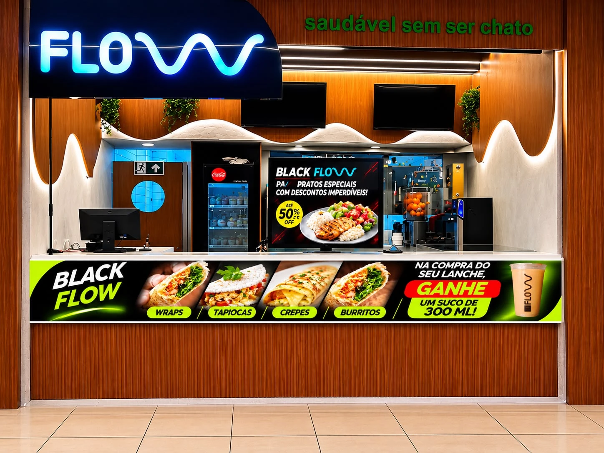
1 2 3 3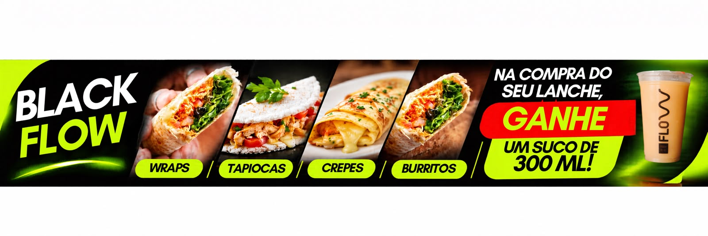
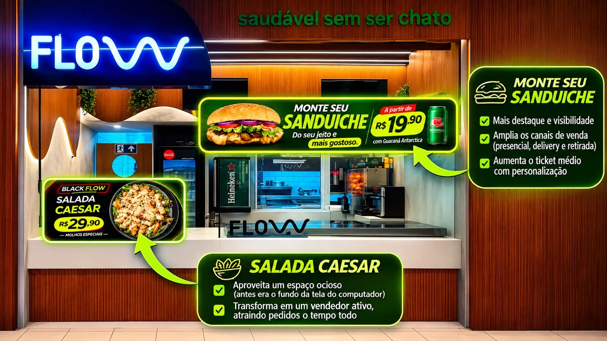
| Peça | Onde entra | Mensagem | Status |
|---|---|---|---|
| Monte seu sanduíche | Acima da janela de passagem | “Do seu jeito é mais gostoso” · a partir de R$ 19,90 com Guaraná Antarctica | A validar |
| Salada Caesar | Tela do lado esquerdo (antes, fundo do computador) | Black Flow · R$ 29,90 · molhos especiais | A validar |
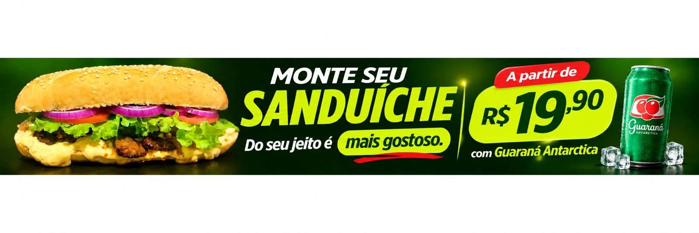
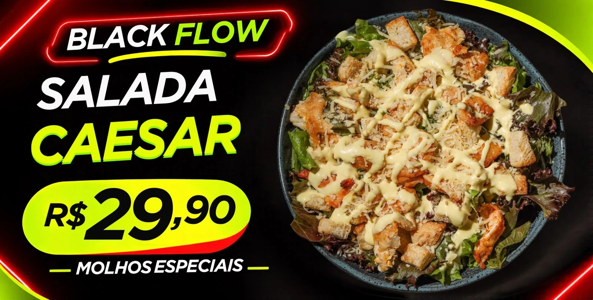
A mesma arte em três fundos, para validar qual funciona melhor na praça de alimentação. O produto e a frase são os mesmos: só muda o clima da peça.
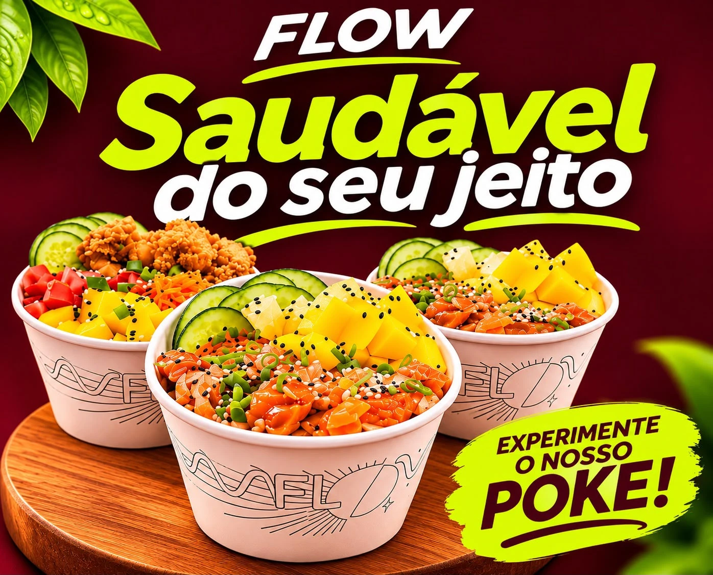
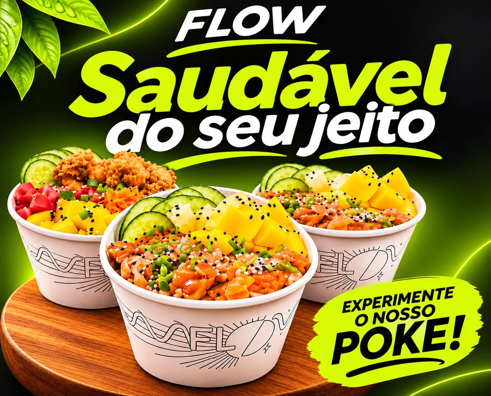
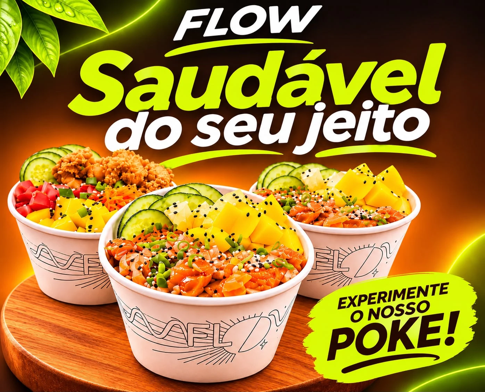
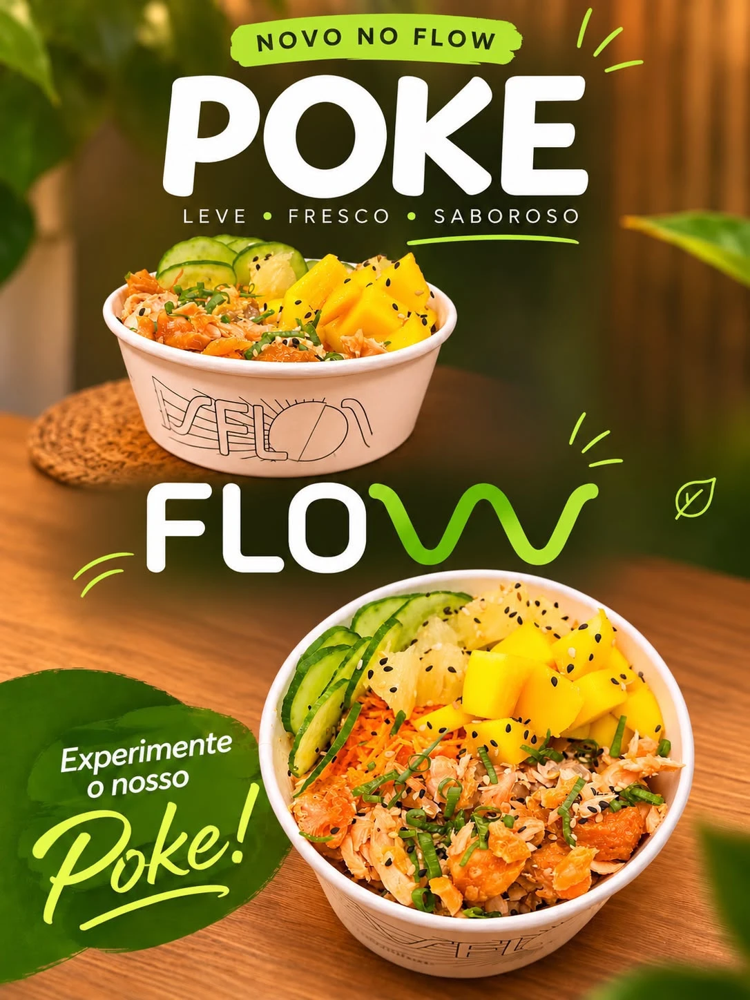
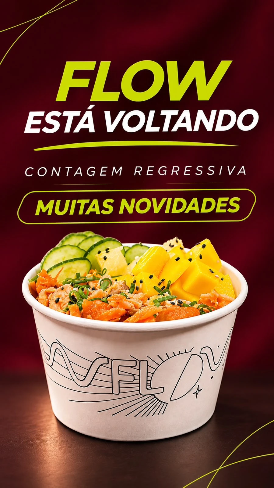
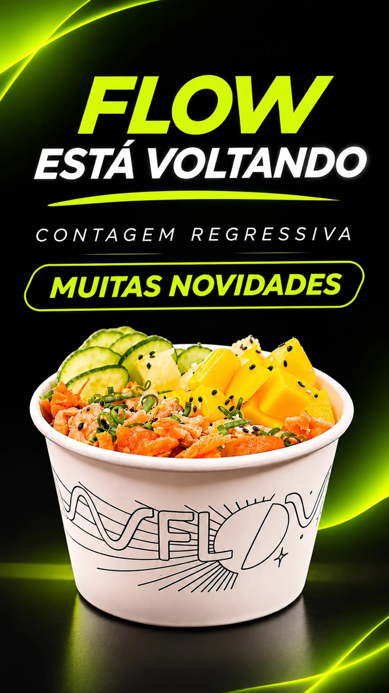